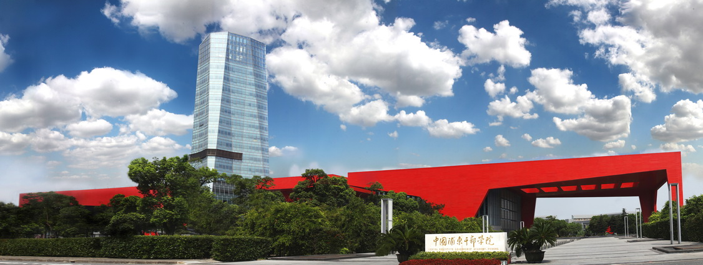

<ion-view title="">
    <go-back my-title="{{dataZpywSource.ftitle}}"><div style="width:60px;" ng-click="fontSizeFun()"><p style="font-size:14px;margin-top:8px;">-&nbsp;字体+</p></div></go-back>
    <ion-content class="scroll-content has-header bg-gray">
        <div class="row" style="font-size:22px;margin:8px 8px 0px;text-align:left;line-height:1.5em">
            <!--<button class="button button-positive" ng-click="goDetail($index,dataZpywSource);">播 放</button>-->
            {{dataZpywSource.title}}
        </div>
        <div class="row" style="color:gray;font-size:18px;margin:8px 8px 0px;text-align:left">
            &nbsp;&nbsp;{{dataZpywSource.subtitle}}
        </div>
        <div class="row" style="font-size: 16px; color: #999; border-bottom: 1px solid #ddd;" ng-if="dataZpywSource.category!=2">
            <div class="col" style="text-align:left">
                <i class="ion-clock">&nbsp;时间:&nbsp;&nbsp;{{dataZpywSource.releasetime|date:'yyyy-MM-dd'}}</i>
            </div>
        </div>
        <div style="width:100%;">
            <videogular vg-plays-inline="true" style="background-color:white" vg-player-ready="onPlayerReady($API)" vg-update-time="onUpdateTime($currentTime, $duration)" vg-theme="controller.config.theme">
                <vg-media style="display:none;" vg-src="controller.config.sources"
                          vg-tracks="controller.config.tracks">
                </vg-media>
                <vg-controls style="position:relative">
                    <vg-play-pause-button></vg-play-pause-button>
                    <vg-time-display>{{ currentTime | date:'mm:ss' }}</vg-time-display>
                    <vg-scrub-bar>
                        <vg-scrub-bar-current-time></vg-scrub-bar-current-time>
                    </vg-scrub-bar>
                    <vg-time-display>{{ timeLeft | date:'mm:ss' }}</vg-time-display>
                    <vg-volume>
                        <vg-mute-button></vg-mute-button>
                        <vg-volume-bar></vg-volume-bar>
                    </vg-volume>
                </vg-controls>
                <vg-poster vg-url='controller.config.plugins.poster'></vg-poster>
                <vg-analytics vg-track-info="config.plugins.analytics.events"></vg-analytics>
            </videogular>
        </div>
        <div style="position:relative;">
            <div>
                <div class="padding">
                    <!---->
                    <span style="font-size:{{fontSize}};" id="wishContent" ng-bind-html="dataZpywSource.content">

                    </span>
                </div>
            </div>
        </div>

    </ion-content>
</ion-view>